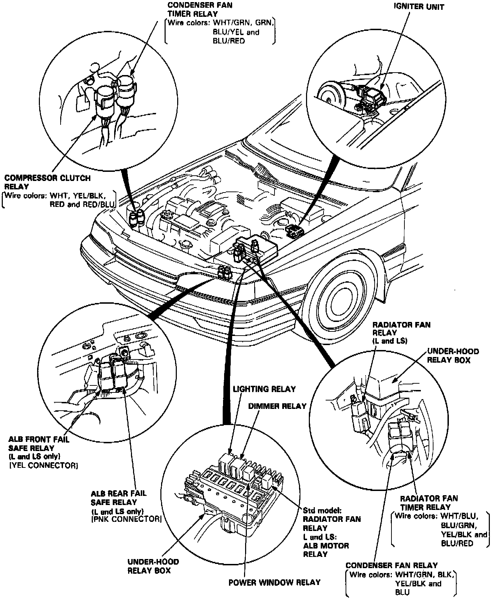

Operation CHARM
: Car repair manuals for everyone.
Home
>>
Acura
>>
1990
>>
Legend Sedan V6-2675cc 2.7L SOHC FI
>>
Repair and Diagnosis
>>
Heating and Air Conditioning
>>
Locations
>>
Relays and Control Units - Engine Compartment
>>
Coupe
Coupe
Coupe - Compressor Clutch Relay:
